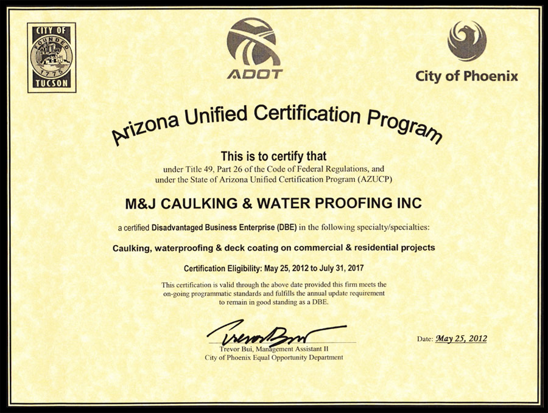

About Us
M&J Caulking is primarily a subcontractor doing business with general contractors. M&J's customers build new commercial projects, renovate existing buildings, expand existing buildings and TI projects. Customers are located throughout the Phoenix Metro area and the State of Arizona.
M&J Caulking has been in business since February 2000. We are DBE (Disadvantage Business Enterprise) certified with the State of Arizona. Our certification renews every 2-3 years. While certificates are not always issued each year, confimation of certification can be obtained from the links below.
Some of our customers include:- Central Valley Specialists
- Chasse Building Team, Inc.
- CORE Construction, Inc.
- Willmeng Construction, Inc.
Community Service
Company employees volunteer at a local food bank.
Links
DBE Certification State of Arizona, AZ UTRACS.azdot.gov (search #10662)